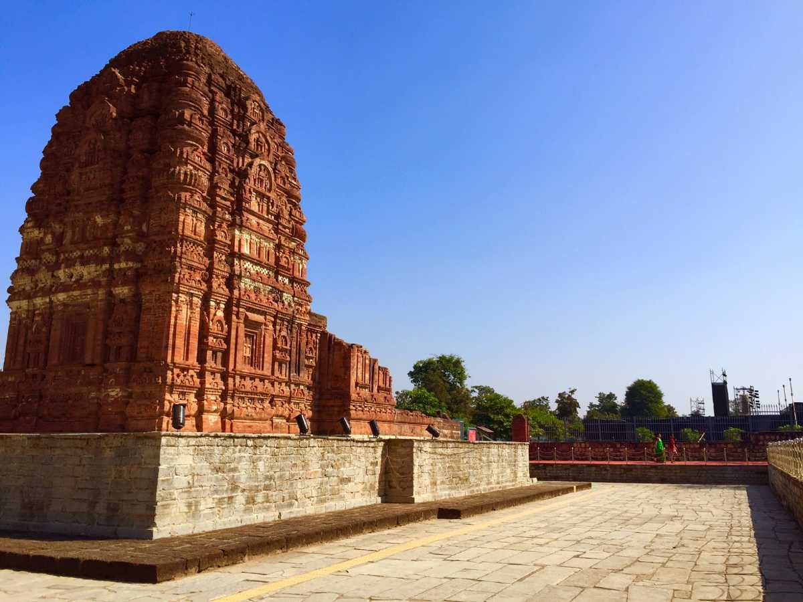

Sirpur
Sirpur
Sirpur is a small village located in the state of Chhattisgarh, situated on the banks of river Mahanadi. It is 35 km away from the Mahasamund district and around 78 km away from the city of Raipur, which is the capital of Chhattisgarh. The village of Sirpur is an archaeological wonder. Inspiration to many architects, this village is rich in its temple culture. A quaint hidden gem, it has a deep connection to the Buddhism world and a treasure for archaeological findings from the 8th century.
There are numerous temples one can visit, and is generally a hub for passionate historians. A look at the historical artefacts and the deep carvings on the walls of the temples have inspired many architects around the world. The Buddhist monasteries of this village are said to be one of the most important and most significant in India. Apart from the rich historical importance and fascinating findings in these villages, there is more to this village. The Chhattisgarh Tourism Board organises a music and dance festival here to promote the Buddhist sites and celebrate its culture. Offering a rare mix of art and culture with different performance and a deep history and evolution of art, Sirpur is a peaceful village filled with wonders.
Major Tourist Attractions:
- Lakshman Temple
- Baleshwar Temple
- Ram Temple
- Buddha Vihara
- Teevardev
- ASI Museum
Recommended Tours

Himachal Pradesh

Uttarakhand

Gujarat
How to Reach:
By Road: Sirpur is 78 km away from Raipur (1 hour and 30 minutes journey) and is home to many Buddhist, Hindu and Jain temples. To reach the city, you can drive by car or book a cab from Raipur. Sirpur is very accessible due to the four-lane national highway and bus services available.
By Train: Most people prefer to travel by car or bus from Raipur and enjoy the scenic view on the way, but you can also take a train to Mahasamund district, nearest railway station.
By Flight: Booking a flight to the nearest airport which is Raipur is also possible. From there one can take a cab or bus to Sirpur.
Best Time to Visit:
To explore the village and have a pleasant experience, plan your trip at the best time. The weather conditions from January to March are considered to be the best. Temperature ranges from 50F to 106F. The second best time would be from October to November. With winter approaching, the climate gets cool and suitable for a walk around. April and May can be pretty dry and hot making the time spent there uncomfortable. There is also a Sirpur music festival celebrated in January. So if you like exploring villages and cultures, Sirpur is the place for you.
Watch on YouTube: